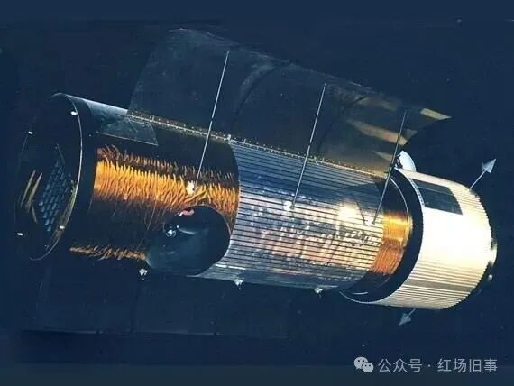
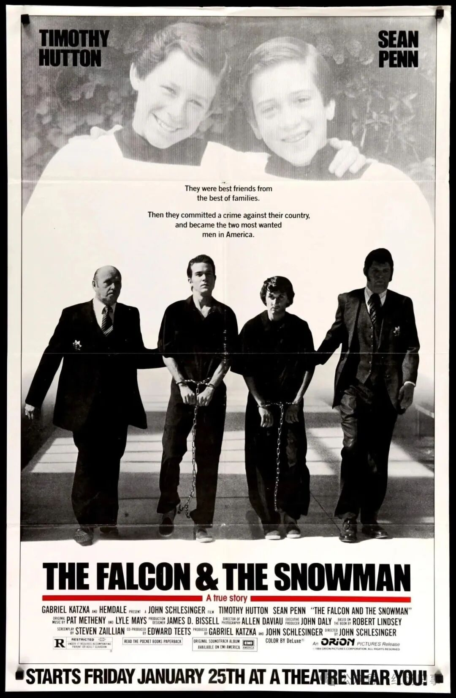

第7期 他让肯尼迪看清了赫鲁晓夫的底牌——潘科夫斯基，古巴导弹危机的“隐形主角”第6期 1949年苏联核爆震惊世界：谁偷走了曼哈顿计划的密码？楔子：1977年美国加州的逮捕令1977年1月，墨西哥城。一个年轻人在苏联大使馆门前来回徘徊，神情恍惚。他叫道尔顿·李，26岁，刚从洛杉矶飞来。李的毒瘾正在发作。他痛苦地抓着使馆大门栏杆拼命晃动，佝偻着身子，却始终不见有人出来。最后，他把一个装着微型胶卷的信封从门上方扔了进去，转身离开。两名墨西哥警察正好在附近巡逻，他们觉得李形迹可疑，上前盘查。李神情慌乱、言辞闪烁，两名警察决定把他带回警局。审讯中，李的心理防线彻底崩溃。他供出的秘密，震惊了整个美国情报界：他和他的好朋友克里斯托弗·博斯，在过去18个月里，把美国最先进的KH-11侦察卫星技术手册，一页一页卖给了苏联。两个20出头的年轻人，一个是为钱吸毒的“雪人”，一个是对政府失望的“猎鹰”。他们用一种近乎荒诞的方式，让美国对苏联的太空监视能力倒退了五年。
一、荒诞开端：TRW公司的“猎鹰”
1973年，21岁的克里斯托弗·博斯进入TRW公司——一家为中央情报局服务的国防承包商。他的父亲是前联邦调查局特工，靠着这层关系，博斯轻松获得了一个在机密区域工作的职位。TRW正在研制KH-11“锁眼”侦察卫星，这是当时世界上最先进的间谍卫星。它可以从100英里的高空清晰地拍摄地面一英尺见方的物体，实时传回图像，被称为“天眼”。中情局指望着用它来监视苏联的导弹部署和部队调动。

博斯的工作让他接触到核心机密区。他很快发现，TRW的安全管理漏洞百出：机密文件随意堆放，保险柜密码长期不变，安保人员对技术一窍不通。他用一个微型照相机，开始大量拍摄机密文件。数百份KH-11的设计图纸、技术参数、操作手册，就这样变成了一卷卷胶卷。博斯的代号，叫“猎鹰”。因为他从小热爱驯鹰。
二、苏联接头：“雪人”的致命任务
传递情报的任务，交给了博斯从小最好的朋友——道尔顿·李。李是个毒瘾缠身的人，靠贩毒维持自己的毒瘾。他的绰号叫“雪人”。博斯告诉他：去墨西哥城，把胶卷交给苏联大使馆的人。每送一次，就能拿到一笔钱，足够买更多的毒品。李的动机纯粹而简单：钱，为了吸毒。1975年至1977年间，李多次飞往墨西哥城，与苏联情报人员接头。他把胶卷藏在中空的鞋底、书籍夹层、糖果盒里。苏联人付给他数千美元，有时是现金，有时直接转账。但李的毒瘾越来越重，人也越来越大意。1977年1月的那次行动，李吸了毒后前往苏联大使馆。他等了很久不见接头人，毒瘾发作，精神恍惚，做出了那个致命的举动——把胶卷从门上方扔了进去。墨西哥警察逮捕他时，从他身上搜出了微型胶卷。胶卷上的内容，让美国驻墨西哥大使馆的官员倒吸一口凉气：KH-11卫星的机密技术手册。
三、情报损失：中情局的“眼睛”瞎了五年
李被捕后，很快供出了博斯。1977年4月，联邦调查局逮捕了博斯。警方在他家中搜出更多未出售的机密文件，以及一个藏在花盆里的保险柜钥匙。美国司法部的起诉书显示：博斯和李泄露的情报，包括数百份KH-11侦察卫星的技术文件，涵盖光学系统、数据传输方式、地面处理程序等核心机密。这意味着什么？KH-11是美国对苏监视的“天眼”。苏联获得这些技术手册后，等于拿到了这台“天眼”的说明书。他们开始针对性地伪装导弹基地、调整部队部署方式，甚至干扰卫星的传输信号。美国国防部的评估报告认为：这次泄密导致美国对苏监视能力倒退了至少五年。那些原本在卫星眼皮底下的军事设施，一夜之间“隐形”了。1978年，美国国防情报局的分析人员发现，苏联突然开始大规模采取反卫星侦察措施，甚至对之前已被拍过的武器系统也开始隐蔽。他们据此判断：苏联一定获得了关于KH-11真实能力的机密情报。
四、后续反转：越狱与假释
1977年4月28日，博斯被判40年监禁，李被判终身监禁，但故事没有结束。1980年1月，博斯从加州洛姆波克监狱越狱成功。他在逃亡期间又犯下17起银行抢劫案，逍遥法外一年半之久。1981年，他在华盛顿州再次被捕。李则在监狱里老老实实蹲了13年。1990年，他获得假释出狱。博斯在1996年申请减刑未果，直到2003年才获释。出狱后，他做过餐厅经理，结婚生子，试图回归正常生活。1984年，两人的故事被拍成电影《猎鹰与雪人》，成为冷战谍案中的经典题材。《猎鹰和雪人》案件是美国冷战时期最离奇的间谍案之一。两个年轻人没有受过任何间谍训练，没有复杂的接头暗号，没有专业的情报传递技巧，却凭着一台相机和一颗吸毒上瘾的胆量，穿透了美国最严密的情报防线。

1985 年 纽约院线上映的《猎鹰与雪人》宣传海报
历史冷知识：毒品与间谍的隐秘关联博斯和李的案件并非孤例。据统计，冷战时期因毒品、债务等个人经济原因引发的间谍案，占所有间谍案的15%左右。李为了吸毒当间谍，博斯为了帮助朋友和表达对政府的不满，两个年轻人的荒唐选择，酿成了一场情报灾难。2019年，美国国防情报局在回顾这段历史时写道：“KH-11泄密案提醒我们，最危险的漏洞往往不在技术，而在人。”互动推理博斯和李的故事，是一出荒诞的悲剧。他们的动机各不相同：博斯对政府失望，李为了钱吸毒。你认为，这起泄密案最主要的教训是什么？欢迎在评论区分享你的想法。下一期预告：阿道夫·托尔卡切夫——CIA眼皮底下的“芯片间谍”他是苏联雷达专家，却成了CIA最宝贵的“鼹鼠”。六年间，他向美国提供了苏联战机雷达系统的核心机密，让美国空军的电子战能力整整领先一代。克格勃称他为“世纪叛徒”，CIA称他为“战后最有价值的间谍”。1985年，他被处决于卢比扬卡地下室。直到最后一刻，他仍相信美国会救他。他是技术理想主义，还是金钱诱惑？他的暴露，源于内部叛徒还是技术反制？下期，走进阿道夫·托尔卡切夫的双面人生。第4期 潜伏三年，一镐毙命：那个终结“红军之父”的神秘刺客第3期 红色乐队——纳粹心脏里的苏联情报网